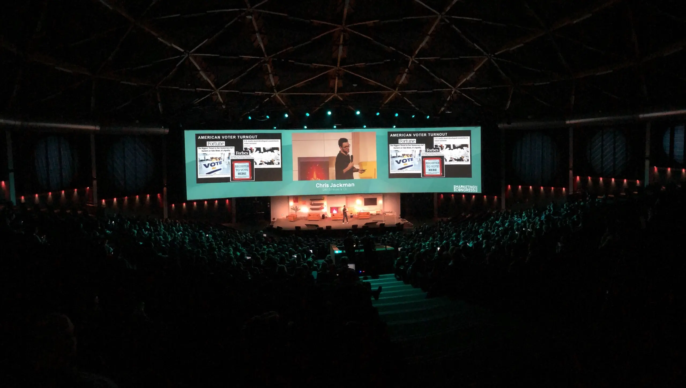
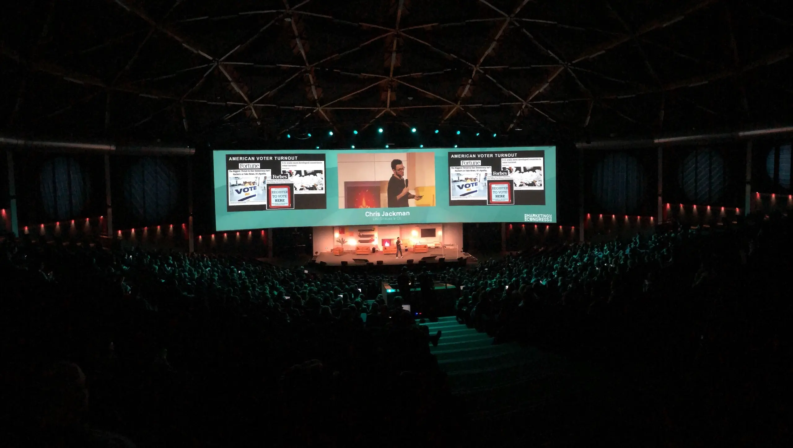
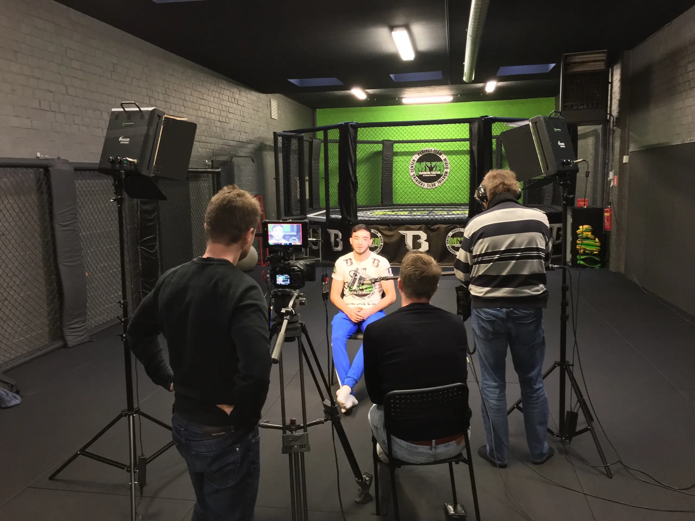
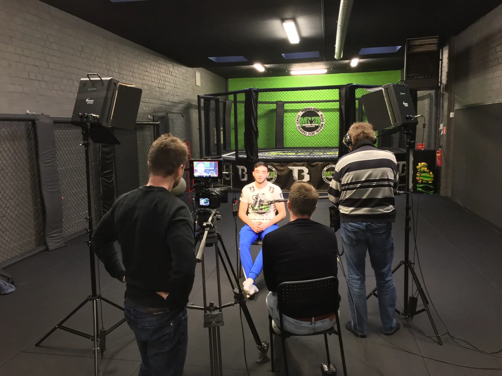

25 Years Orange
In collaboration with Novid and Balthazar Events, I played a
key role in celebrating the 25th anniversary of Belgian
telecom giant Orange. The event featured an impressive LED
wall and delay screens set up within a spacious tent at De
Schorre in Boom. We seamlessly integrated the pictures of
the on-site photographers into the show, while I managed the
mixing of all visuals on the screens. This immersive event
showcased our expertise in delivering exceptional results.
 

 
